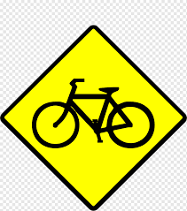
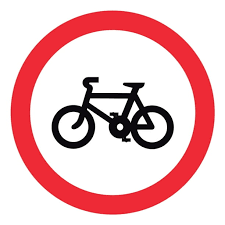
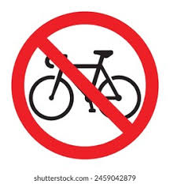
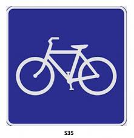
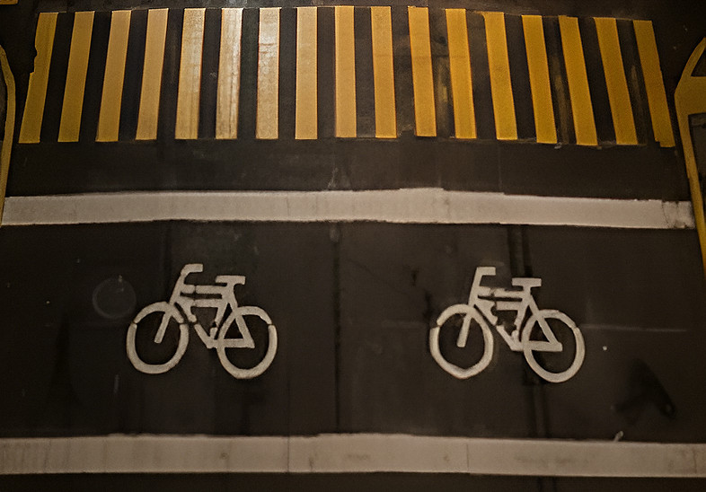
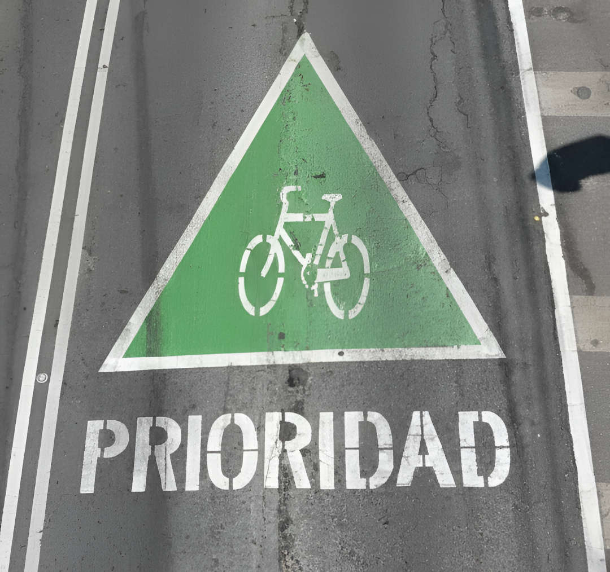

Alerta a conductores sobre la proximidad de zonas donde circulan bicicletas frecuentemente.

Vía o carril donde únicamente se permite la circulación de vehículos no motorizados.

Vías rápidas o zonas de alto riesgo donde el tránsito de ciclistas no está permitido.

Indica el inicio de una ruta diseñada y señalizada especialmente para la movilidad ciclista.

Zona de espera que permite a los ciclistas posicionarse delante de los autos en los semáforos.

Indica que el carril es compartido y el ciclista tiene derecho legal a ocupar todo el espacio.